Problem Statement
The warehouse setup process was fragmented and relied on manual Excel sheets, creating data silos between sales and developers that led to high error rates and redundant data entry. Additionally, clients lacked real-time visibility and control, forcing them to rely on slow support tickets for even minor dashboard adjustments or report generation.
Solution Implemented
By replacing disconnected workflows with a centralized digital repository, we enabled transparency, traceability, and real-time validation across the entire project lifecycle. Additionally, we introduced visual process map monitoring that aligned with warehouse mental models.
The Team
Design Team - 1 Product Designer (Me)
Product Team - 1 Product Manager, 1 Scrum Master
Development Team - 1 Database Architect, 4 Front-end Engineers, 5 Back-end Engineers, 3 QA Engineers
Service Ecosystem
Existing Process :
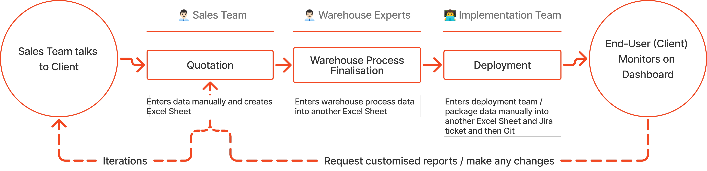
Redesigned Process :
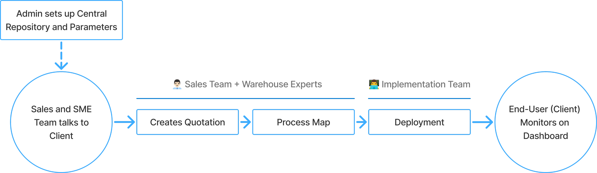
Introducing Central Repository and Setup
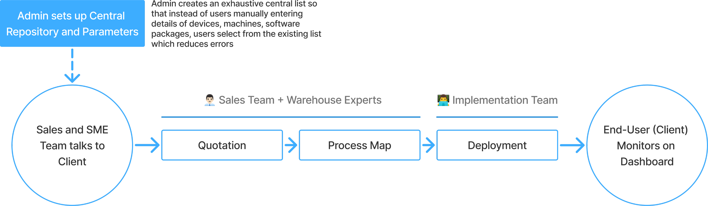
1. From Fixed UI to Parameter Management:
Instead of hardcoding configurations, we designed a granular settings panel where users could adjust warehouse parameters, eliminating dependency on devs for each change.
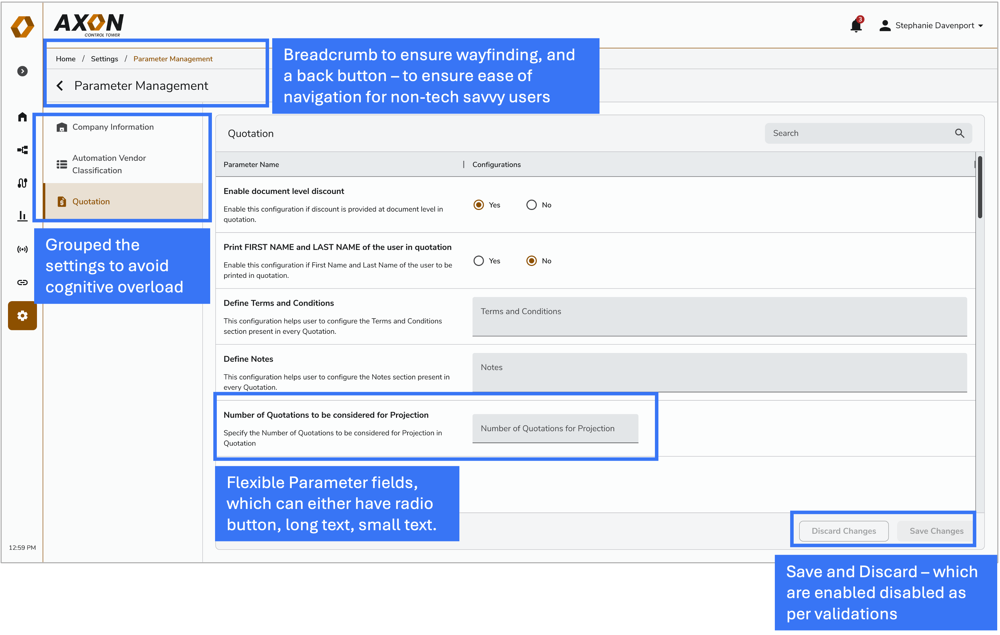
2. Introducing the Setup Section:
Created a central repository where users could manage devices, systems, and other parameters. This allowed new warehouses to self-onboard without manual setup.
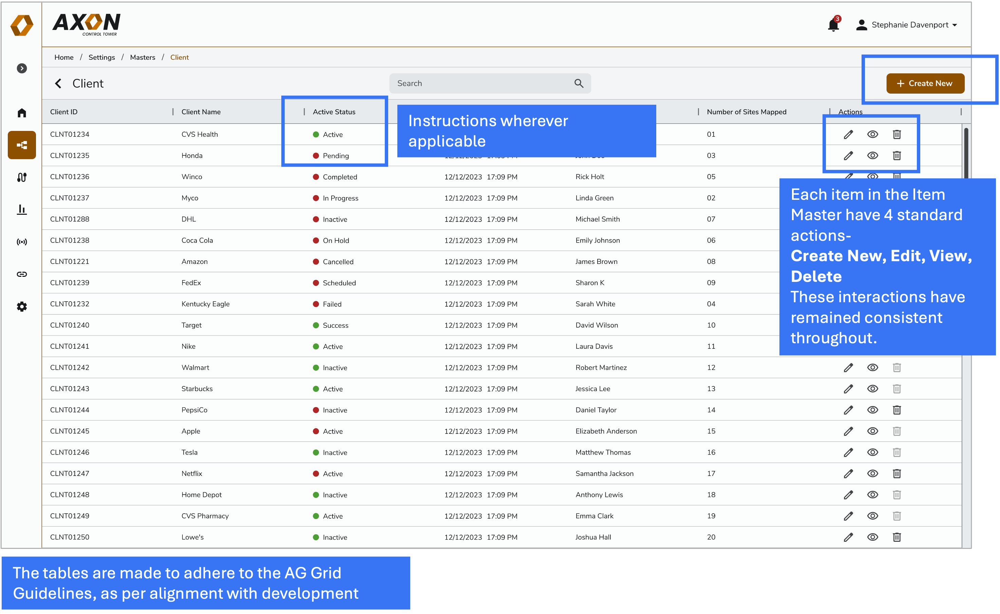
Designing Quotation Process for Sales Team
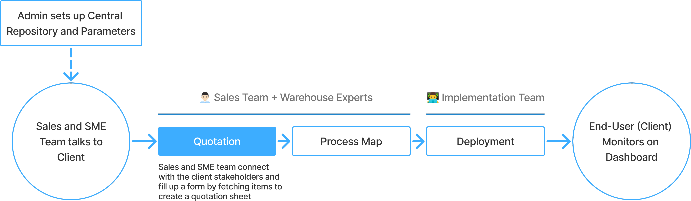
1. The Quotation Form
The quotation form was designed to handle a highly cognitive task by using progressive disclosure, guiding users through the information one section at a time rather than presenting everything at once.
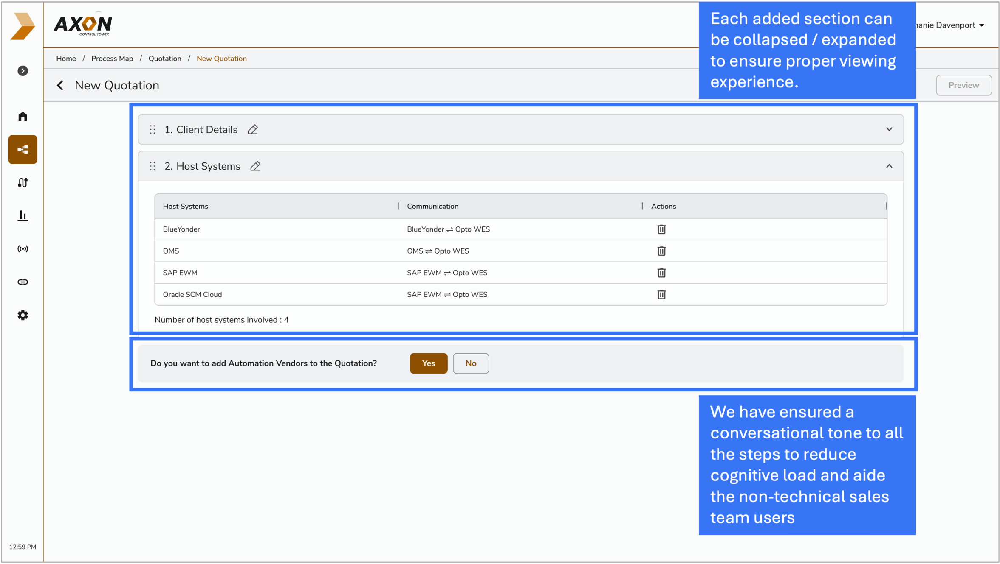
2. Data Entry in the Quotation
For quotation data entry, we enabled users to fetch items from an existing repository via a pop-up. The interaction was designed to support precise, structured actions-such as selecting an item first and then explicitly defining its units-ensuring accuracy and reducing manual input errors.
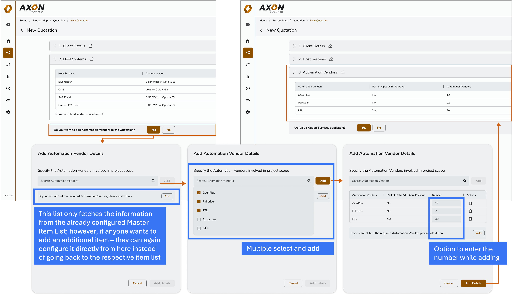
Digital Maps for Warehouse Processes
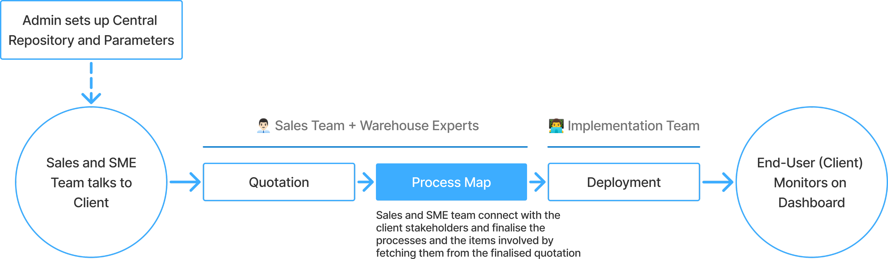
Creating a Process Map involved designing a system-level diagram that represents warehouse operations in real time. Unlike a static flowchart, the map is data-synced and reflects the live state of processes and their components, helping users quickly assess whether each part of the operation is performing as expected.
The Process Map is generated directly from the approved quotation by fetching communications, automation vendors, and robots from the existing data. This reduced manual input and ensured consistency across teams, while attaching images of robots and devices improved fault diagnosis by enabling faster visual identification during operational issues.
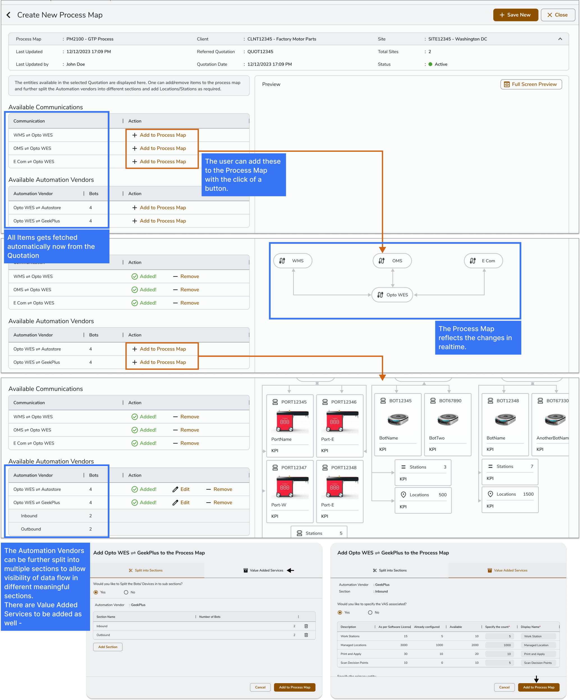
Linking Digital Map to Data
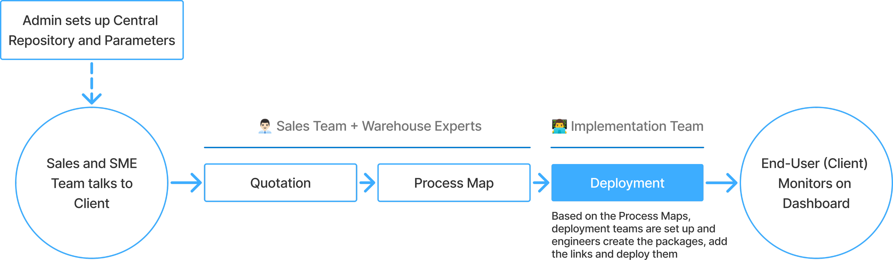
Once the process maps are developed in collaboration with the client and the tech team, the focus shifts to integrating the process map with backend services, enabling live tracking capabilities. The implementation team then moves on to first create an implementation team.
The implementation team then ensured that all artefacts and files were uploaded, linked, and deployed within the same platform. Keeping everything in one system made inconsistencies and failures visible in context, significantly reducing ambiguity and making troubleshooting faster and more effective.
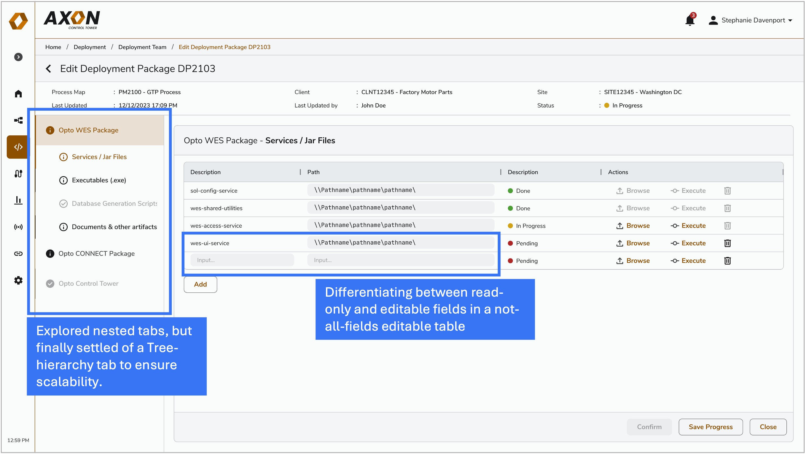
Monitoring by Warehouse Managers
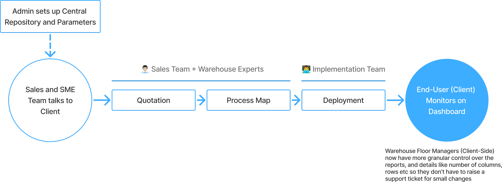
1. Process Map Monitoring
Provides process-level, real-time monitoring through a diagrammatic view of all defined warehouse workflows. Each process and its components can be evaluated in context, with errors or performance issues immediately flagged in red for quick identification.
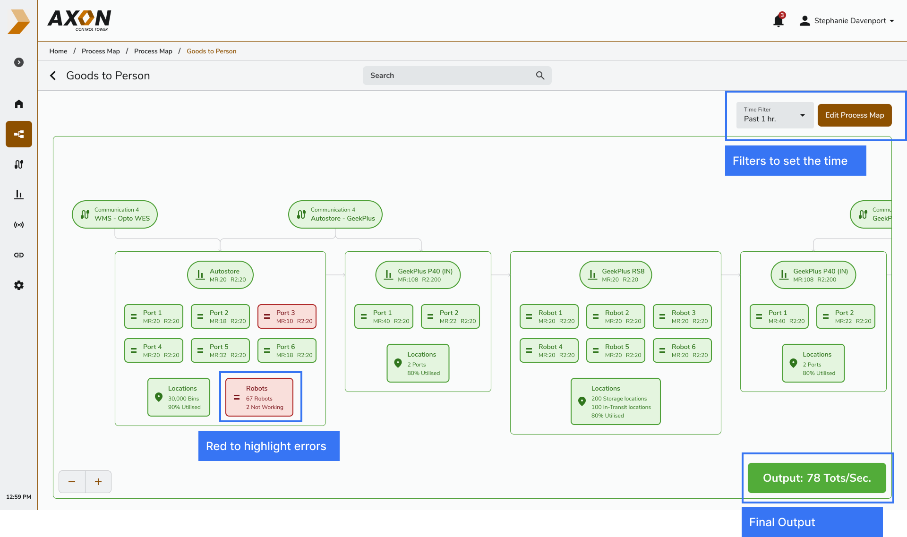
2. AI Assisted Dashboard
Enables users to interact with operational data via an AI chatbot to generate reports, create custom widgets, or retrieve specific tables and data points, reducing manual effort and accelerating access to insights.
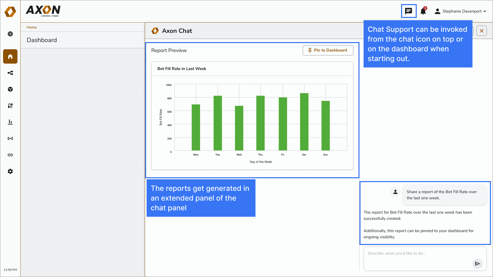
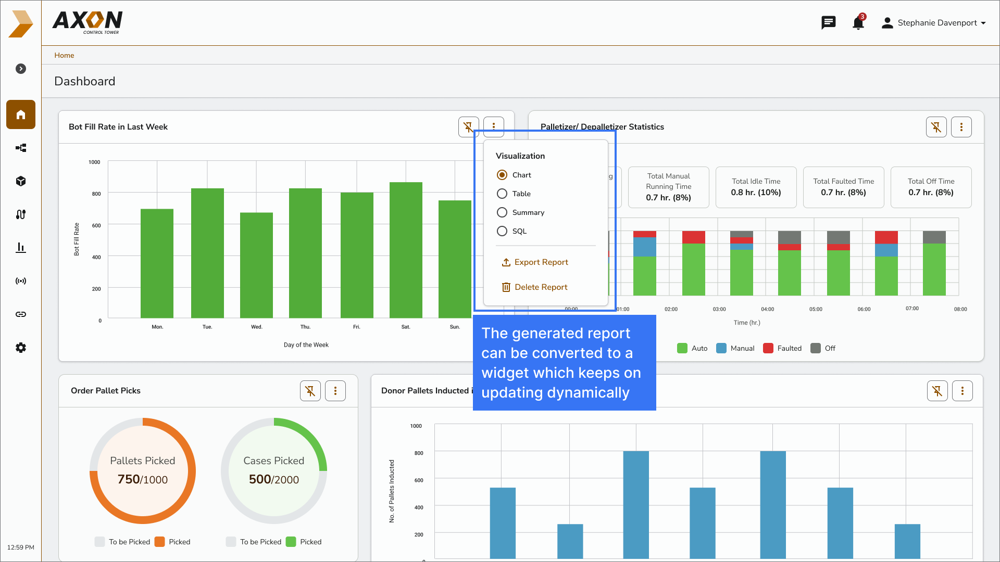